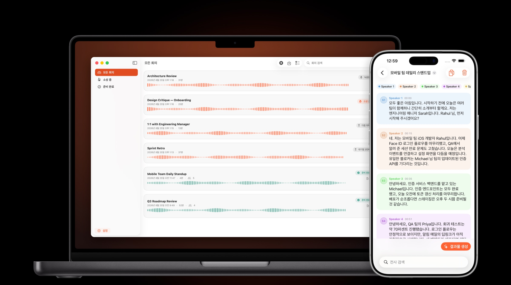
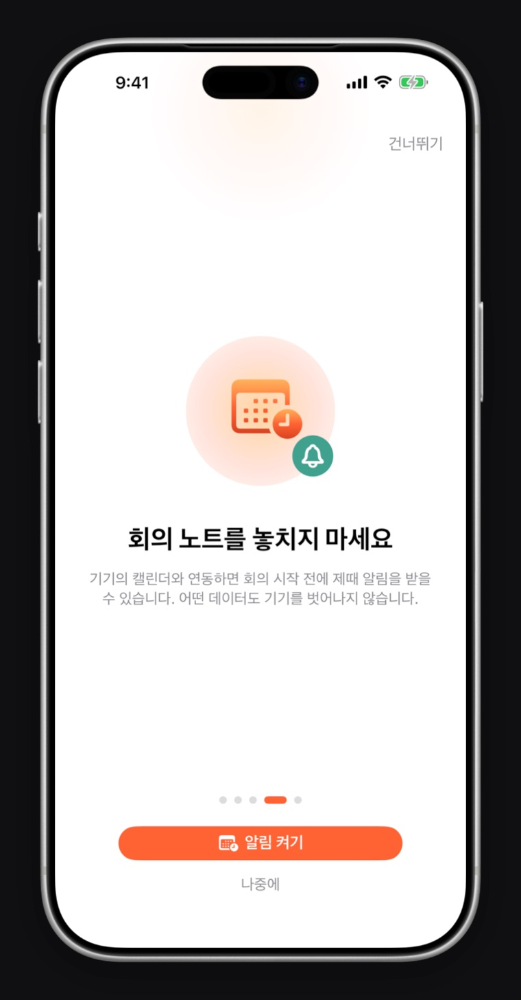
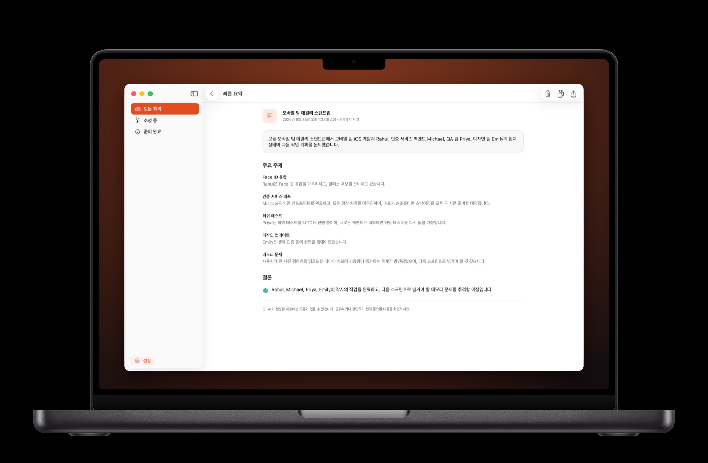

Kiln 4.1의 새로운 기능
회의 노트를 놓치지 마세요.
기기의 캘린더와 연동하면 회의 시작 전에 제때 알림을 받을 수 있습니다. 어떤 데이터도 기기를 벗어나지 않습니다.
Kiln이 제안할 때 탭 한 번으로 알림을 켜세요. 알림을 탭하면 회의 이름이 입력된 채로 Kiln이 열려, 바로 녹음할 수 있습니다.
Kiln
전사와 요약, Jira 스토리를 모두 Mac과 iPhone, iPad 안에서 만듭니다.
무료 · 계정 없음 · 9개 언어

회의를 녹음하거나 가져오세요. Kiln이 목소리를 구분하고, 전사를 작성하고, 어차피 직접 쓰려던 문서로 바꿔 드립니다. 이 모든 일이 기기 안에서 일어납니다. 오디오와 전사, 보고서는 기기를 벗어나지 않습니다.
보고서
모든 보고서는 전사를 바탕으로, 회의에서 쓴 언어로 작성됩니다.1
1분 만에 핵심을 — 개요, 주제, 결론
다룬 모든 개념을 예시와 함께 깊이 있게
담당자와 우선순위가 있는 작업
스프린트에 바로 쓸 수 있는 에픽, 스토리, 수락 기준
근거, 영향, 위험이 함께 정리된 결정 사항
참석자, 안건, 논의, 결과
바로 보낼 수 있는 격식 있는 후속 메일
새로운 기능, 개선, 수정, 알려진 문제
개인정보
Kiln에는 자체 서버가 없습니다. 회의는 녹음된 곳에서 처리되고, 그곳에 그대로 남습니다.
전사와 화자 분리는 물론 제목과 보고서 생성까지 모두 기기에서 처리됩니다. Apple의 온디바이스 프레임워크와 앱에 포함된 화자 분리 모델을 사용합니다.
네트워크에 연결할 권한 없이 배포되므로, 어디에도 아무것도 보낼 수 없습니다.
가입할 것이 없고, 추적·광고·분석 코드도 들어 있지 않습니다.
회의를 삭제하면 오디오와 전사, 화자 기록은 물론 그 회의로 만든 모든 보고서까지 함께 삭제됩니다.
언어
Kiln은 9개 언어를 전사하고, 각 보고서를 영어로 번역하지 않고 회의에서 쓴 언어 그대로 작성합니다.2 Kiln의 화면도 9개 언어를 모두 지원하며, 기기 언어와 별개로 설정할 수 있습니다.

Kiln 4.1의 새로운 기능
기기의 캘린더와 연동하면 회의 시작 전에 제때 알림을 받을 수 있습니다. 어떤 데이터도 기기를 벗어나지 않습니다.
Kiln이 제안할 때 탭 한 번으로 알림을 켜세요. 알림을 탭하면 회의 이름이 입력된 채로 Kiln이 열려, 바로 녹음할 수 있습니다.
Mac, iPhone, iPad
Mac과 iPhone, iPad를 위한 네이티브 앱으로, 기기마다 어울리는 세심함을 담았습니다.
